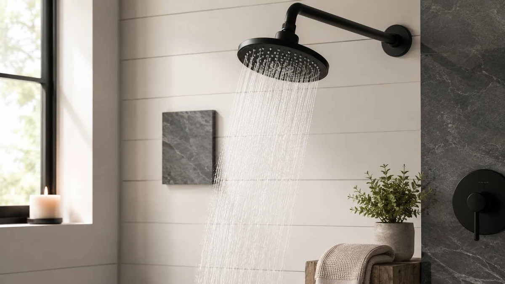

Things to Know Before You Buy
- Flow rate is capped at 2.5 GPM. Federal law limits every shower head sold in the US to 2.5 gallons per minute. The real choice is whether to go lower for water savings or stay at the cap for a firmer feel.
- Spray feel comes from nozzle design, not price. A well-engineered $25 head can feel stronger than a $90 one. Mode count and a fancy finish do not change how the water actually hits you.
- Handheld or fixed is your first real decision. A handheld wand makes rinsing, cleaning the tub, and washing kids or pets far easier; a fixed head is simpler and feels more like a traditional overhead shower.
- The fitting is universal. Almost every head threads onto a standard 1/2-inch shower arm by hand, so installation takes about five minutes and needs no plumber.
- Material sets the price. Most heads under $50 are chrome-plated ABS plastic, which is light and corrosion-resistant. Solid brass lasts longer but costs several times more, and you rarely need it.
A shower head is one of the cheapest upgrades that touches your daily life, and one of the easiest to get wrong. The wall of options at the hardware store all promise a spa-like experience, ten massage modes, and rainfall coverage, but most of those claims tell you nothing about whether the thing will actually feel good in your bathroom. Buy the wrong one and you end up with a weak dribble, a finish that clashes with your faucet, or a giant rain head that droops off the arm.
This guide skips the marketing and covers the handful of specs that genuinely affect your shower: flow rate, water pressure, spray type, finish, and fit. It walks through the main categories of head and how to match one to your home. It also covers the mistakes that trip people up and the simple maintenance that keeps a head spraying like new. There are no products to sell you here, just the decisions you need to make before you spend a cent.
If you want the short version: for most people, a quality fixed or handheld head running between 1.8 and 2.5 GPM, in a chrome or brushed-nickel finish that matches your existing fixtures, is the right call. Spend more only for solid-brass durability, a trusted brand, or a specific feature like filtration or a magnetic dock. Everything below explains why.
What You Need to Know
Two numbers do most of the work when you shop for a shower head, and people constantly confuse them. The first is flow rate, measured in gallons per minute (GPM). This is how much water the head lets through, and since 1994 federal law has capped it at 2.5 GPM for any head sold in the US. Many modern heads run lower, at 1.8 or 2.0 GPM, often carrying an EPA WaterSense label. A lower flow rate saves water and money on your bills, but it gives the head less to work with, so cheap low-flow models can feel thin.
The second number is water pressure, measured in PSI, and it comes from your home's plumbing, not the head. A shower head cannot manufacture pressure your pipes do not supply. What a good head can do is use the water it gets more cleverly, concentrating it through smaller nozzles so the spray feels firm. This is why two heads with identical 2.5 GPM ratings can feel completely different: one spreads the water across a wide, soft face, the other focuses it into stronger streams.
Beyond those, the practical details are the thread fitting and the body material. Nearly every head in the US uses a standard 1/2-inch NPT connection, so it screws straight onto your existing shower arm with no adapter. Bodies are usually chrome-plated ABS plastic at the budget end and solid brass at the premium end. Knowing just these basics, flow, pressure, fit, and material, puts you ahead of most of the marketing you will read.
Types and Categories
Fixed wall-mount heads are the classic setup: a single head that screws onto the shower arm and points down at you. They are the simplest, cheapest, and most reliable option, with nothing to break and nothing to dock. Handheld heads add a hose and a cradle, letting you pull the head down to rinse, clean the tub, or wash kids and pets. They cost a little more and the hose is one extra part that can eventually leak, but the flexibility wins a lot of people over.
Rainfall heads use a wide face, typically 6 to 12 inches, to drop water straight down in a soft, drenching pattern. They feel luxurious but spread your flow thin, so they need decent water pressure to shine and can underwhelm in low-pressure homes. Dual or combo units pair a fixed rain head with a handheld wand on a diverter, giving you both at once for a higher price and a slightly more involved install.
Then there are the specialty categories. High-pressure heads use restricted nozzles to make weak plumbing feel stronger. Low-flow or water-saving heads deliberately run below 2.0 GPM to cut usage. Filtered heads add a cartridge to reduce chlorine and minerals, which matters most in hard-water areas. None of these is universally best; the right category depends entirely on your water and how you actually shower.
How to Choose
Start with your water pressure, because it shapes every other decision. If your shower already feels strong, you have room to choose a wide rainfall head or a water-saving low-flow model without sacrificing the experience. If it feels weak, lean toward a high-pressure head and stay near the 2.5 GPM cap. A $10 hose-bib pressure gauge from any hardware store will tell you exactly where you stand; anything below about 40 PSI calls for caution with large rain heads.
Next, decide between handheld and fixed. Ask yourself a simple question: do you rinse the tub, bathe children or pets, or want to spot-clean the shower walls? If yes, a handheld earns its keep. If you just want to stand under a stream and get clean, a fixed head is simpler and one less thing to maintain. This single choice narrows the field more than any spec.
Then settle the flow rate and finish. Go with a 1.8 GPM WaterSense head if saving water matters and your pressure is good; stick with 2.5 GPM if your pressure is borderline. For finish, the rule is to match what is already in your bathroom: chrome with chrome, brushed nickel with brushed nickel. A mismatched finish is the most common regret people have after installing.
Finally, weigh material and budget. Under $50, expect chrome-plated ABS plastic, which is perfectly serviceable and lightweight enough not to droop. Pay up for solid brass only if you want a head that lasts a decade or more, or if you want a brand with a proven warranty behind it. Spray-mode count should be near the bottom of your priority list; most people use one or two settings and ignore the rest.
Common Mistakes to Avoid
The biggest mistake is buying for the spray-mode count. A head advertising ten settings sounds impressive, but most people settle on one or two within a week and forget the rest exist. Worse, more modes mean more internal moving parts that can wear out or clog with scale. A single well-designed spray almost always beats a gimmicky multi-mode head.
The second is ignoring your water pressure. People fall for a beautiful 10-inch rain head, install it in a low-pressure home, and end up showering under a limp drizzle. Always match the head to the water you actually have, not the bathroom you wish you had. If your pressure is weak, a smaller, more focused head will serve you far better than a large one.
Other frequent slip-ups: mismatching the finish with your existing faucet and handles, which makes a new bathroom look unplanned; skipping the plumber's tape on the shower-arm threads, which is the number one cause of drips after installation; and overpaying for solid brass when a chrome-plated head would have done the job for a third of the price. None of these is expensive to fix, but all of them are easy to avoid by thinking it through before you buy.
Care and Maintenance
Almost every shower head that feels weak over time is not broken, it is clogged. Minerals in your water, especially calcium and magnesium in hard-water areas, build up inside the nozzles and slowly choke the flow. The fix is cheap and takes minutes. Fill a plastic bag with white vinegar, secure it over the head with a rubber band so the nozzles are submerged, and leave it for two to four hours, or overnight for heavy buildup.
After soaking, run hot water and rub the nozzles. Most modern heads use flexible silicone nozzles for exactly this reason: a quick thumb-rub pops the loosened scale right out. For metal-faced heads, an old toothbrush clears the openings. Doing this once a month keeps the spray consistent and prevents the gradual decline that makes people think they need a new head when they do not.
A couple of longer-term tips. If the head ever drips after you shut the water off, the rubber washer or O-ring inside the connection has likely worn out; a replacement washer costs pennies and screws in by hand. And if you live with genuinely hard water, an inline shower filter or a filtered head will dramatically slow buildup, saving you from descaling so often. Treat the head as a part that needs occasional attention, not a fixture you install and forget, and it will easily last years.
Frequently Asked Questions
How many GPM should a shower head be?
By federal law, shower heads sold in the US are capped at 2.5 gallons per minute, and most modern heads run at 1.8 to 2.5 GPM. If you have strong water pressure and want noticeable water savings, a 1.8 GPM WaterSense model is a smart choice. If your home has weak pressure, stay closer to the full 2.5 GPM so the spray still feels firm. For a deeper look at the trade-offs, see our shower head flow rate guide.
Do more expensive shower heads work better?
Not necessarily. How a shower feels comes from nozzle design and how the head concentrates water, not the price tag. Plenty of heads under $30 deliver a firm, satisfying spray. What extra money usually buys is a solid-brass body instead of chrome-plated plastic, a recognized brand with real warranty support, and convenience features like a magnetic dock. Those are worth paying for if you value durability and brand backing, but they do not make the water itself better.
Will a new shower head increase my water pressure?
A new head cannot create pressure your plumbing does not supply, but it can make a weak shower feel much stronger. Heads marketed as high-pressure use smaller, more focused nozzle openings that speed up the water, so the spray feels firmer even at the same flow rate. If your shower is genuinely weak, also remove and clean the head, since mineral scale clogging the nozzles is the most common cause of a sudden drop in pressure.
Do you need a plumber to install a shower head?
No. Nearly every head threads onto a standard 1/2-inch shower arm by hand. Unscrew the old head counterclockwise, wrap a few turns of plumber's tape clockwise around the arm threads to prevent leaks, then screw the new head on hand-tight. The whole job takes about five minutes and needs no tools beyond maybe a cloth for grip.
How long does a shower head last?
With regular cleaning, a decent shower head lasts several years, and a solid-brass model can run a decade or more. The thing that ends most heads early is not failure but clogging from mineral buildup, which a monthly vinegar soak prevents. If the spray weakens, the finish flakes, or the head starts dripping after you shut off the water and a new washer does not fix it, that is the time to replace it.
Verdict
Choosing a shower head comes down to a few honest questions, not a spec sheet. Check your water pressure first, because it decides whether a wide rainfall head will feel glorious or limp. Decide whether you want the flexibility of a handheld or the simplicity of a fixed head. Pick a flow rate that balances your pressure against your water bill, match the finish to your existing fixtures, and only pay up for solid brass or a premium brand if longevity and warranty genuinely matter to you. Treat the number of spray modes as a tiebreaker, never a deciding factor. Also, wrap yourself in a premium bath towel after your shower. Also, install a shower soap dispenser for convenience. Also, add a shower storage caddy for your products. Also, warm your towels with a towel warmer before you step out. Also, a fog-free bathroom mirror is a great addition.
Do that, and almost any well-reviewed head in your chosen category will serve you well for years, especially if you give it a monthly vinegar soak to keep the nozzles clear. The most expensive mistakes in this category rarely come from the brand on the box. They come from ignoring your own water, picking a finish that clashes with your fixtures, or paying for features you will never use. Get those basics right and a shower head becomes exactly what it should be: a small, cheap upgrade you stop thinking about because it simply works.